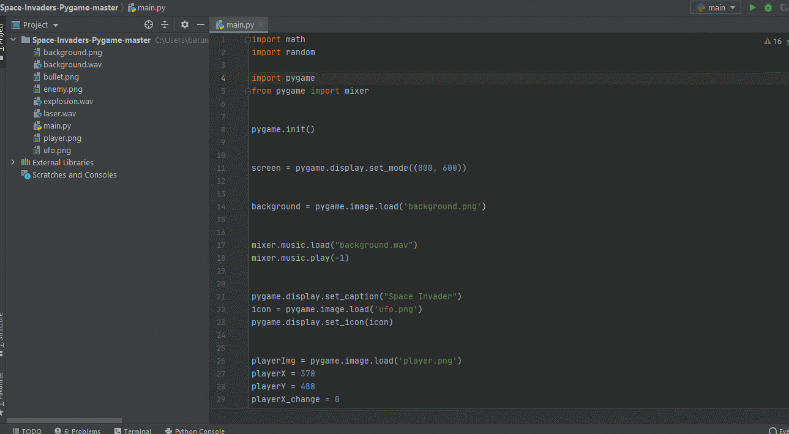
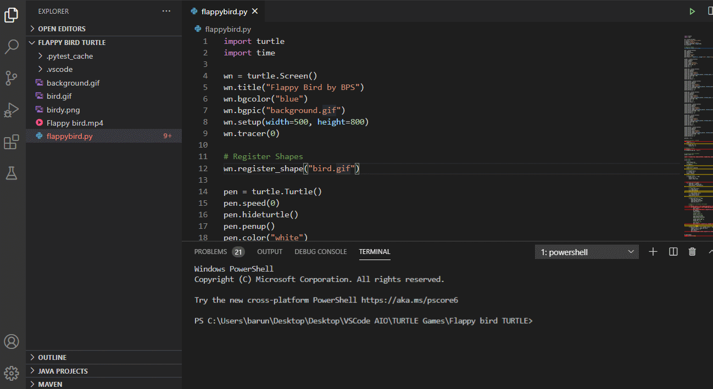
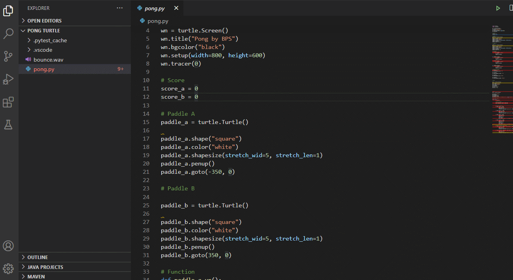

🕹️Game Development with Python
I’ve always believed some hobbies are better experienced when you stop being a user and become a creator yourself.It is much easier than you think it is. I've been there thinking how hard it would be to make the characters or triggers to make a game. It started with me making the famous Space Invaders reliving the childhood memories and smiling as I create it.
👽Using PyGame
I started game development with Pygame making the Space Invaders Game.Pygame is a Python framework which is made specifically for game development. It taught me how the animations, small movements and impacts occurred in the game .I actually had to calculate when a bullet explods on an invader and the points to go up and the alien to respawn at the top.( which happens in a fraction of second).
🐢Using Turtle
Turtle is a module of Python which is used to make illustrations in the virtual canvas provided. It was fun keeping the turtle library open on one end and making flappy bird on the other. I'm going to be honest; it took some time to know the documentation but then I went with the flow.I would recommend to learn game development courses from codeacademy which presents it in a module by module process and makes learning more understandable and fun. After I had finished making flappy bird, I tried creating pong ( with the help of documentation only) and actually succeded.
🐤Flappy Bird
🏓Pong
🤔Future Projects
I haven't been giving attention to game development for a while now, but I have some games to develop in my mind . Even though I selected games which were fun and seemed fancy at first, now I want to choose games which will help me learn advanced functions and minor game mechanics. I will probably create a game in Unity. (it will be Jet Fighter probably)